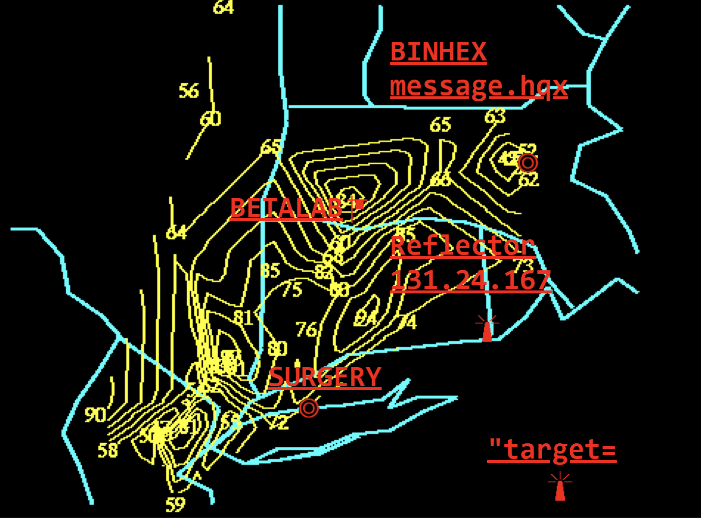

HISTORY OF WEB ART
Characteristics of early internet art
- Interactivity and Participation
- Early internet art required the viewer to become a participant, often transforming passive browsing into active engagement. Works were rarely static; they were designed to be clicked, manipulated, or altered by the user, making the audience a part of the creative process.
- Immateriality and Virtual Existence
- Unlike traditional art, early internet art often existed only in the digital realm, defying physicality and traditional gallery structures. It lived as code on servers, HTML, and browser windows, emphasizing a "non-object" or ephemeral quality.
- Networkability and Connectivity
- The art was often distributed and social, relying on email lists, web browsers, and hyperlinks to create a "networked" experience. This enabled global reach and fostered collaboration, as seen in projects shared across distributed, international communities.
- Use of "Web 1.0" Aesthetics and Code
- Artists often used the raw tools of the early internet—basic HTML code, browser frames, glitch aesthetics, and early graphic user interfaces—as their medium. Examples include the chaotic, anti-aesthetic, and deconstructive work of collective JODI, which treated code and error messages as art.
- Subversion of Institutions and Commercialism
- Early internet art often held a "utopian," democratic ethos, aiming to bypass traditional art galleries, museums, and market structures. It was often created by enthusiasts and artists operating outside conventional commercial art systems.
Early Web Artists 1990-2005
| WEB ARTIST | DESCRIPTION OF WORK | LINKED THUMBNAIL |
|---|---|---|
| Olia Lialina | Interactive Narrative: Known for My Boyfriend Came Back From the War (1996), which uses black-and-white, hyperlinked HTML frames to create a non-linear, broken-conversation story. Vernacular Web Preservation: Focuses on the aesthetics of early, amateur web design (Geocities, animated GIFs) as a form of art history and personal expression. |

|
| JODI (Joan Heemskerk and Dirk Paesmans) | Glitch Aesthetics: Famous for creating, or simulating, code errors and browser crashes to expose the underlying, chaotic structure of web pages. Deconstructed Interface: Their work, such as wwwwwwwww.jodi.org (1995), deliberately distorts user navigation, forcing users to treat the browser as a confusing, abstract, and often nonsensical space. |
 |
| Mary Flanagan | Phage was created in (2000) and it was known for scanning the user’s hard drive and randomly selects images, snippets of text, sounds and other content which then that would create a continually shifting visual space depending on the user's data. |

|
| Douglas Davis | The World's First Collaborative Sentence was created in the year (1994) which the Allowed users to contribute to a sentence that never ends. |

|
| Martin Wattenberg | The IDEA LINE, created in (2001) and it displays a timeline of net artworks, arranged in a group of threads that can glow, the more it glows the more stuff there is in that thread. Each thread can correspond either to a type of artwork or type of technology. |

|
| Tina LaPorta | The voyeur_web created in the year (2001), which it would connect the blueprint of an apartment to images from webcams that open a view into the apartment's rooms when you click the room you want to see. |

|
| Casey Reas | {Software} Structures was created in the year (2004), and what it does is to explore the relevance of conceptual art for the software to think as it as art. |

|